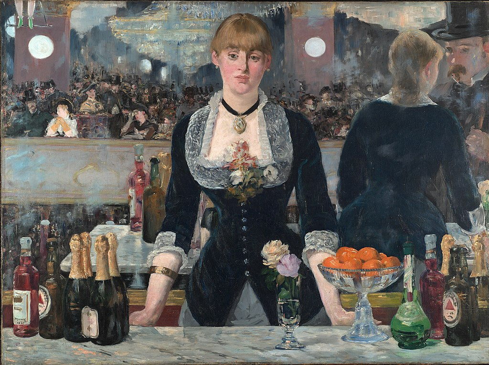

<head>
<meta charset="UTF-8" />
<meta name="keywords" content="drawing, painting" />
<meta name="description" content="drawings by Sunjy" />
<title>Sunjy</title>
<link rel="shortcut icon" type="image/x-icon" href="../../mImages/mCommon/favicon.ico" media="screen" />
<link rel="stylesheet" type="text/css" href="../../mCsses/mCommon/mCssA.css" />
<link rel="stylesheet" type="text/css" href="../../mCsses/mCommon/mCssB.css" />
<link rel="stylesheet" type="text/css" href="../../mCsses/mCommon/mCssC.css" />
<link rel="stylesheet" type="text/css" href="../../mCsses/mCommon/mCssD.css" />
<link rel="stylesheet" type="text/css" href="../../mCsses/mContent/mCssA.css" />
<link rel="stylesheet" type="text/css" href="../../mCsses/mContent/mCssB.css" />
<link rel="stylesheet" type="text/css" href="../../mCsses/mContent/mCssC.css" />
<link rel="stylesheet" type="text/css" href="../../mCsses/mContent/mCssD.css" />
</head>
<script type="text/javascript" src="../../mScripts/mContent/mContentAA.js" /></script>
<script type="text/javascript" src="../../mScripts/mContent/mContentAB.js" /></script>
<script type="text/javascript" src="../../mScripts/mContent/mContentAC.js" /></script>
<script type="text/javascript" src="../../mScripts/mContent/mContentAD.js" /></script>
<script type="text/javascript"></script> 
<script type="text/javascript">
document.write('<div class="mImgAbsolute"></div>');
/*
document.write('<p class="mFontSizeBColor" />From a white paper...</p>');
document.write('<table class="center"><tr><td>');
document.write('');
document.write('</td></tr></table>');
*/
</script>


<script type="text/javascript">
document.write('<p class="mFontSizeBColor" />A Bar at the Folies-Bergère</p>');
document.write('<p class="mFontSizeSColor" />By Edouard Manet, 1882. “A Bar at the Folies-Bergère” depicts a scene in the Folies Bergère nightclub in Paris. This painting shows Manet’s commitment to Realism in its detailed portrayal of a contemporary scene even though he has experimented with perspective and points of view.<br><br>The central figure of the barmaid stands before a mirror, facing the gentleman we can see in the reflection on the right.<br><br>In the mirror’s reflection, we can see the world the barmaid surveys in front of her. In the mirror reflection, she seems engaged with a customer, whoever in full face, she appears protectively withdrawn and remote.<br><br>In the reflection, she seems to lean in and engage with her customers. In the other reality, she is ambivalent about the scene.<br><br>The painting is rich in details which give many clues to social class and the era portrayed. The woman at the bar was a real person, known as Suzon, who worked at the Folies-Bergère in the early 1880s.<br><br>The inclusion of a dish of oranges in the bar suggests that the barmaid is also a prostitute. Manet typically associated oranges with this symbolism in his paintings.<br><br>Other details of note include the pair of green feet in the top left-hand corner, which belong to a trapeze artist who is performing above the restaurant’s patrons.</p>');
document.write('<table class="center" /><tr><td>');
document.write('<br>The central figure of the barmaid stands before a mirror, facing the gentleman we can see in the reflection on the right.<br><br>In the mirror’s reflection, we can see the world the barmaid surveys in front of her. In the mirror reflection, she seems engaged with a customer, whoever in full face, she appears protectively withdrawn and remote.<br><br>In the reflection, she seems to lean in and engage with her customers. In the other reality, she is ambivalent about the scene.<br><br>The painting is rich in details which give many clues to social class and the era portrayed. The woman at the bar was a real person, known as Suzon, who worked at the Folies-Bergère in the early 1880s.<br><br>The inclusion of a dish of oranges in the bar suggests that the barmaid is also a prostitute. Manet typically associated oranges with this symbolism in his paintings.<br><br>Other details of note include the pair of green feet in the top left-hand corner, which belong to a trapeze artist who is performing above the restaurant’s patrons." />');
document.write('</td></tr></table>');
</script>


